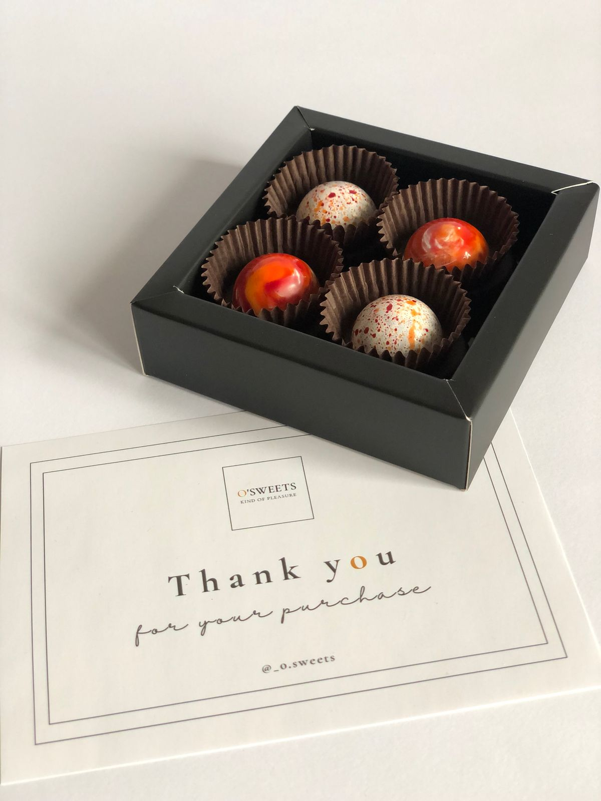

Wedding favours · September 2026
Three hundred and twenty bonbons for Claire & Hugo
The ask
Claire wrote in May with a colour before she had a flavour: the favours had to be violet, to match the tables. She had tasted the blackcurrant bonbon at the counter and liked it without knowing what it was.
What I did
I invited the couple to a Tuesday tasting and put the blackcurrant beside a dyed violet white-chocolate bonbon I made as the decoy. They chose the blackcurrant in one bite — its colour is a deep red-purple that reads violet in candlelight, which solved the tables honestly. Because ganache lives three weeks, I refused their first plan of collecting in August: the 320 bonbons were enrobed on the Tuesday and Wednesday of the wedding week and delivered Saturday morning, 12 September, in cases of two with the date printed small on the base — made 8 September, best by 29 September.
The outcome
Every case went; the couple kept the last twelve for their first anniversary month, inside the dated window by nine days. The €640 covered the bonbons, the cases and delivery across Lyon — €4 a guest, which is the figure I now quote weddings from: two bonbons, made in the week itself, never stockpiled.
“She talked us out of purple food colouring and into a flavour — and the favours were the thing guests actually mentioned. Two aunts have since ordered the same case for Christmas.”
